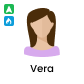
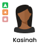
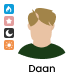
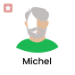
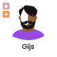
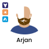

There are a few different voices. To help you pick out the right one, you can press down to listen to a preview and/or look at the different colours and get an idea of the voices.
Hold down the button to hear a preview of the voices






Pick a background to display during the story
The story will automatically stop and the page will close after the chosen time
By clicking on continue you will be saving the story settings. If you wish to change this, you can change them in settings. Happy listening!